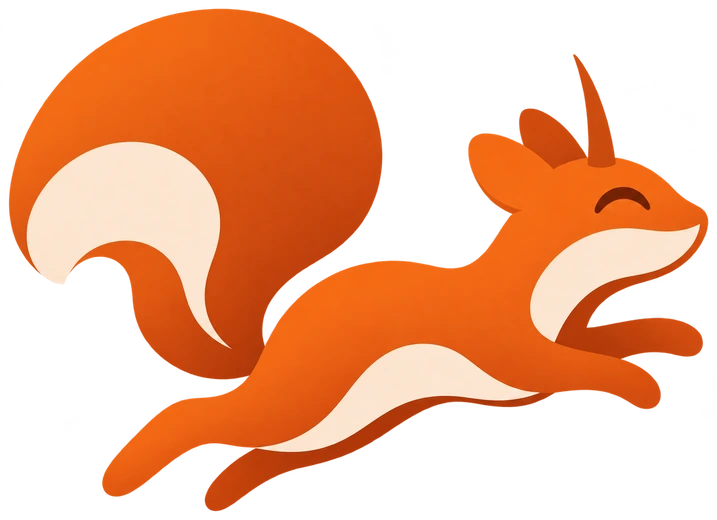

Design system / v1.2.0

Ratatoss UI Tokens.
Bảng màu, tỷ lệ, kích thước và ví dụ component dùng trực tiếp từ tokens.css. Sửa CSS gốc để cập nhật toàn UI — không phụ thuộc framework.
Token chính: --rt-brand-500. Thử nghiệm này chỉ đổi màu trong tab hiện tại; bản preview và mã nguồn không bị sửa. Muốn thay thật, sửa tokens.css rồi build lại preview.
01 — Brand & trạng thái
02 — Semantic surface / theme
03 — Buttons, status và controls
Đang nhậnĐã xác minhOfflinePIPELINEDEMO
04 — Component composition
Sơ đồ P2P / bài toán minh họa
A → B/C (WAN) · B ↔ C (LAN) · D có thể nhận từ các nguồn đủ điều kiện. Các cạnh phụ thuộc dữ liệu scheduler, không mặc định là đang truyền.
Peer BDanang · LAN
68% RECEIVEDB
Receiver B
Đang nhận / chưa xác minh file
Shell / layout tokens
05 — Hướng dẫn chỉnh sửa
Mở tokens.css để chỉnh palette, text size, radius, spacing, node và shell; xem docs/DESIGN_TOKENS.md để tra toàn bộ 142 token gốc + 2 theme, và docs/COMPONENT_DIMENSIONS.md để tra kích thước cụ thể theo desktop/tablet/mobile. Bản gốc Product Brief không được thay đổi.
Prototype mô phỏng, không phải Client Croc thực. Xem giao diện demo Ratatoss